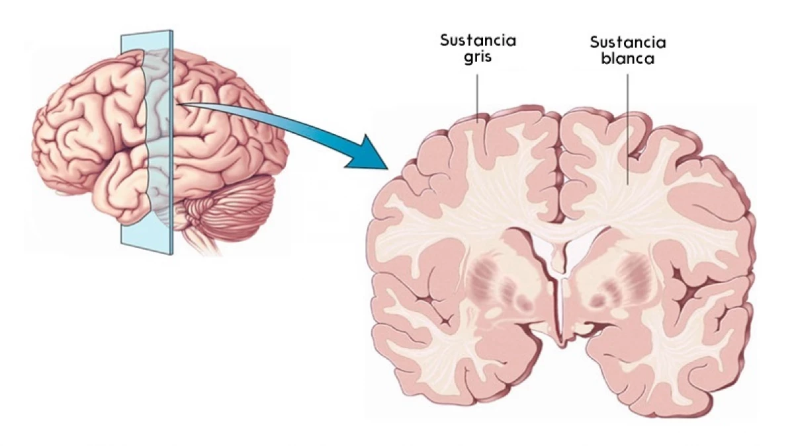

Tejido Muscular 🧬

El tejido muscular está formado por células especializadas denominadas fibras musculares, cuya principal función es la contracción.
Músculo liso

Definición y características:
El músculo liso es involuntario, no estriado, formado por células fusiformes con un solo núcleo central.
Contracción:
- Lenta, sostenida y rítmica.
- Regulada por el sistema nervioso autónomo, hormonas y factores locales.
- No presenta sarcómeros visibles, pero sí actina y miosina.
Ubicación:
- Aparato digestivo, respiratorio, urinario, vasos sanguíneos, útero, iris del ojo.
Funciones:
- Movimiento interno de sustancias (peristalsis).
- Regulación de diámetro de vasos y bronquios.
- Contracción uterina, tono visceral.
Tejido Nervioso 🧬

Definición:
Tejido especializado en recepción y transmisión de señales. Formado por neuronas y neuroglías.
Neuronas:
Células que generan y transmiten impulsos. Estructura: soma, dendritas, axón.
Sustancia gris y blanca:
- Gris: somas, sinapsis. Procesamiento.
- Blanca: axones mielinizados. Conducción rápida.
Transporte axónico:
- Anterógrado: soma → terminal. Rápido o lento.
- Retrógrado: terminal → soma. Reutiliza materiales o transporta virus.
Polaridad de membrana:
Basada en la distribución de iones. Potencial de reposo → -70 mV. Interviene la bomba sodio-potasio.
Mielina
Capa aislante en axones. Mejora la conducción saltatoria.
- SNC: oligodendrocitos.
- SNP: células de Schwann.
Células gliales

- Astrocitos: soporte, barrera hematoencefálica.
- Oligodendrocitos: mielina en SNC.
- Microglía: defensa inmunológica.
- Ependimocitos: revisten ventrículos.
- Schwann: mielina en SNP.
- Satélite: soporte en ganglios periféricos.
Nervio
Conjunto de axones en el SNP. Envueltos en endoneuro, perineuro y epineuro. Clasificación: sensitivos, motores o mixtos.